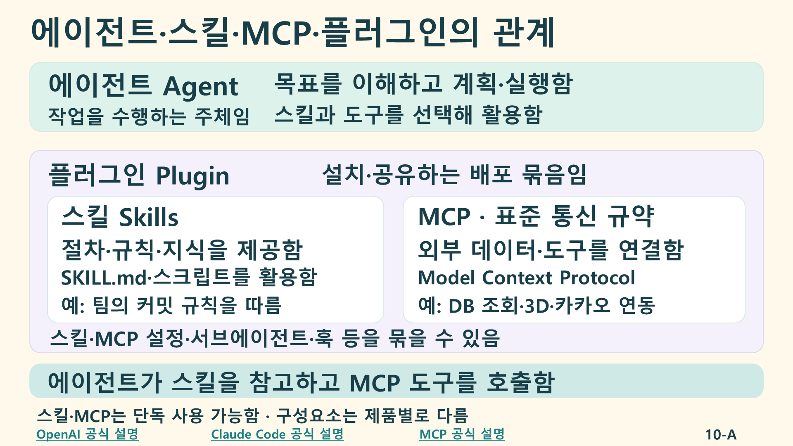

<!doctype html><html lang="ko"><meta charset="utf-8"><meta name="viewport" content="width=device-width,initial-scale=1"><title>에이전트·스킬·MCP·플러그인 개념과 관계</title><style>*{box-sizing:border-box}body{margin:0;background:#f4faf7;color:#183f49;font-family:Arial,"Malgun Gothic",sans-serif}nav{padding:14px 24px;display:flex;gap:24px;flex-wrap:wrap;background:white}a{color:#167f87;font-weight:800}main{max-width:1500px;margin:auto;padding:20px}img{width:100%;height:auto;display:block;border-radius:18px}details,footer{background:#fff;padding:20px;border-radius:15px;margin-top:20px;line-height:1.8;font-size:18px}dt{font-weight:900}dd{margin:4px 0 18px}footer a{display:block;overflow-wrap:anywhere}@page{size:A4 landscape;margin:0}@media print{nav,details,footer{display:none}main{padding:0;max-width:none}img{width:100vw;height:100vh;object-fit:contain;border-radius:0}}</style><nav><a href="../index.html">← 교육자료로 돌아감</a><a href="에이전트_스킬_MCP_플러그인_개념1페이지.pptx">개념 1페이지 편집용 PPTX</a><a href="에이전트_스킬_MCP_플러그인_개념1페이지.pdf">개념 1페이지 PDF</a><a href="../slides/AI활용교육_개념과활용추가_44장_영상8편.pptx">44장·영상 8편 통합본</a><a href="subagents-hooks.html">서브에이전트·훅 개념과 활용 1페이지</a></nav><main><details><summary>개념 설명과 발표자 참고를 펼침</summary><dl><dt>에이전트(Agent)</dt><dd>사용자의 목표를 이해하고 필요한 맥락을 수집한 뒤 도구로 행동하고 결과를 검증하는 작업 수행 주체임. 모델과 도구, 실행 환경이 함께 작동함.</dd><dt>스킬(Skills)</dt><dd>특정 작업의 절차·규칙·지식을 제공하는 재사용 지침임. SKILL.md와 필요 시 스크립트·참조 자료·양식을 활용함. 팀의 커밋 메시지 규칙을 따르는 작업이 예임.</dd><dt>MCP(Model Context Protocol)</dt><dd>AI 애플리케이션을 외부 데이터·도구와 연결하는 표준 통신 규약임. 실제 조회·생성 기능은 연결된 MCP 서버가 제공함. 데이터베이스 조회, 3D 모델 생성, 카카오 도구 연동 등에 활용할 수 있음.</dd><dt>플러그인(Plugin)</dt><dd>스킬·MCP 연결 설정 등을 묶어 설치·공유하는 배포 단위임. Claude Code에서는 서브에이전트·훅 등의 구성요소도 묶을 수 있음. 포함 요소는 선택적이며 제품별 지원과 설치 방식이 다름.</dd><dt>서브에이전트와 훅</dt><dd>서브에이전트는 작업의 일부를 분담하는 보조 에이전트임. 훅은 특정 사건·시점에 실행되도록 설정하는 동작임.</dd><dt>관계</dt><dd>에이전트가 스킬의 지침을 참고하고 필요한 MCP 도구를 호출함. 플러그인은 이러한 기능을 설치·공유하기 쉽게 묶음. 스킬과 MCP는 플러그인 없이도 개별적으로 사용할 수 있음.</dd></dl></details><footer>공식 자료 확인일: 2026-11-11<a href="https://learn.chatgpt.com/docs/skills-and-plugins">OpenAI: learn.chatgpt.com/docs/skills-and-plugins</a><a href="https://developers.openai.com/plugins/concepts/plugins">OpenAI 플러그인 구조: developers.openai.com/plugins/concepts/plugins</a><a href="https://code.claude.com/docs/en/plugins">Claude Code: code.claude.com/docs/en/plugins</a><a href="https://code.claude.com/docs/en/how-claude-code-works">에이전트 실행 구조: code.claude.com/docs/en/how-claude-code-works</a><a href="https://modelcontextprotocol.io/docs/getting-started/intro">MCP 공식 설명: modelcontextprotocol.io/docs/getting-started/intro</a></footer></main></html>